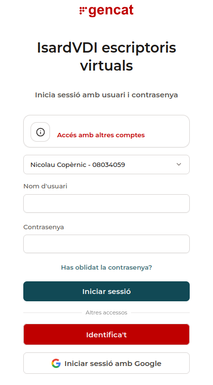

Webs d'ús habitual¶
Aquesta pàgina recull les pàgines i portals web que faràs servir més sovint durant el curs.
Webs del dia a dia¶
1. Pàgina web de l'Institut¶
Web amb la informació general de l'Institut.
Recursos i documents habituals
Dins d'aquesta web és especialment important la secció Recursos i documents habituals, on trobaràs models de documents que et poden fer falta durant el curs, com ara:
- Acta elecció delegat/ada
- Sol·licitud vaga alumnes
- Drets i deures de l'alumnat
- Sol·licitud baixa mòduls
- Sol·licitud de canvi de torn
- Sol·licitud semipresencialitat
- Sol·licitud sortir d'hora
- Sol·licitud de convalidació directa de centre de mòduls professionals de cicles formatius
2. Moodle del centre¶
Portal del campus virtual del centre. Hi trobaràs els mòduls en què estàs matriculat, amb el material corresponent i les activitats proposades a classe.
- Login: usuari i contrasenya de centre.
3. iEduca¶
Portal des d'on pots consultar l'estat de la matrícula, els mòduls en què estàs inscrit i les qualificacions que aniran al teu expedient acadèmic.
- Login: usuari i contrasenya de centre.
Webs per al treball a l'aula¶
1. Isard¶
elmeuescriptori.gestioeducativa.gencat.cat
Portal al núvol on trobaràs les màquines virtuals que pots necessitar en exercicis pràctics o exàmens.
- Login: usuari i contrasenya d'Educació.
No entris mai amb el compte de Google
A la pantalla de login, no facis servir mai l'opció d'entrar amb un compte de Google. Selecciona sempre l'opció d'entrar amb el login i contrasenya d'Educació, i tria l'Institut Nicolau Copèrnic com a centre.

2. qBittorrent¶
Aquest portal està allotjat als servidors del propi Institut i conté programari i imatges ISO que pots necessitar durant les pràctiques.
Descarrega sempre des d'aquest portal
Quan necessitis algun d'aquests recursos, descarrega'l sempre des d'aquí i no des d'una pàgina equivalent a Internet. Com que aquest portal es troba dins la xarxa del centre, la descàrrega es fa per la xarxa interna i no consumeix l'ample de banda d'Internet del centre.